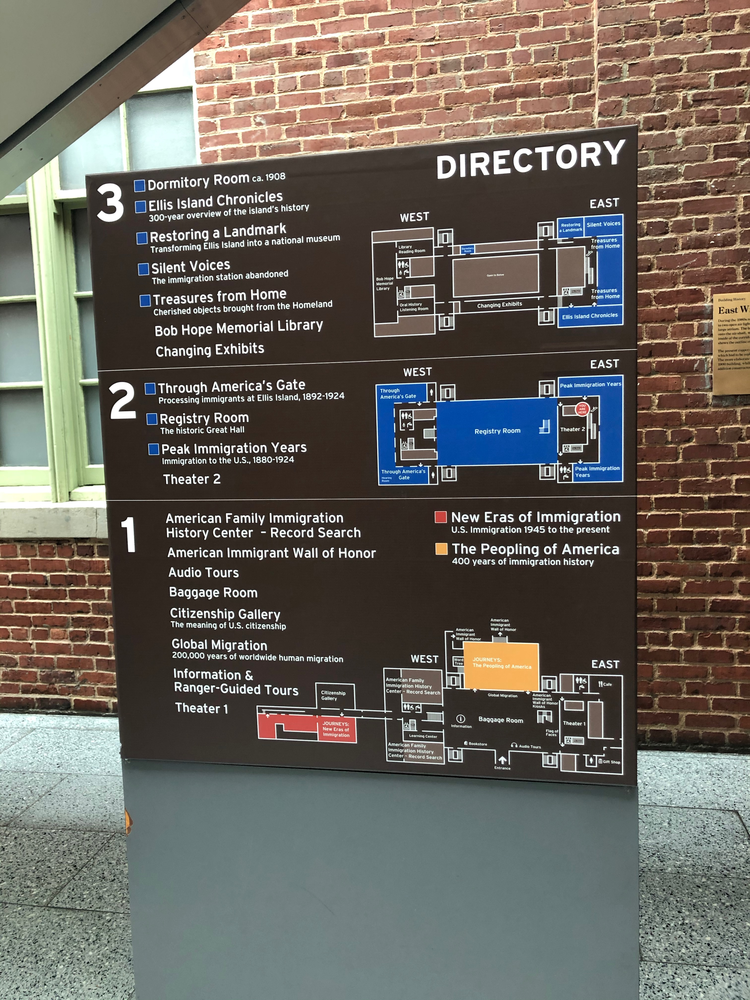
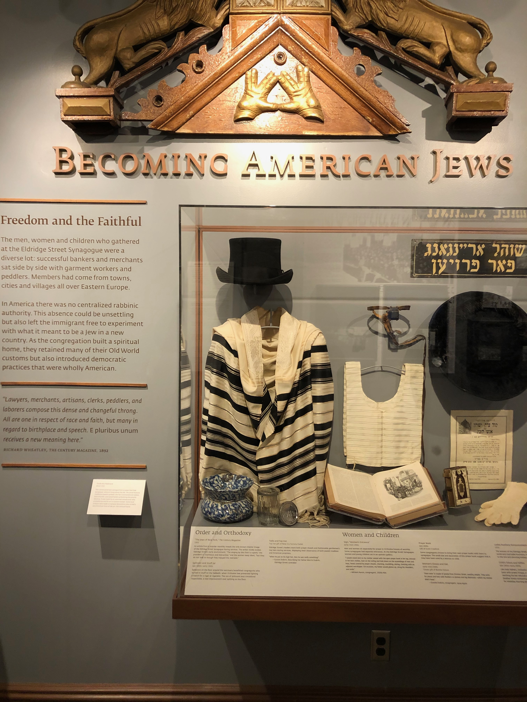

What narratives are told?
When visiting the sites, I found a range of different narratives about immigration and immigrants being told. Through examining these differing stories, and the processes leading up to their selection for inclusion in the sites’ curatorial offerings and ultimate display to the public, we can see examples of the different ways in which individual and collective memories of immigration are inscribed in physical places.
In terms of the sheer quantity of information on display, Ellis Island’s National Museum of Immigration .
The Museum is home to various exhibits, broadly covering , , and the .
A common critique of the Museum, which is purportedly a National Museum of Immigration, is its heavy focus on the history of the site itself and the kind of immigration and immigrants that would have arrived in the country through it in its ‘heyday’. In doing this, “”.
Proponents of this view may see the site (and the immigration narratives it selectively recounts) as a tool of the state (being run by the National Park Service) “” and thus generating a sense of national unity. In this view, the museum is “”. For example, the narrative of the American Dream is readily present in displays in the Museum which seek to show poor, downtrodden immigrants escaping poverty to a land of opportunity, rising through their hard work and determination.

Past researchers have looked at the process and actors involved in the production of narratives at places such as the Museum of Immigration. It has been noted that, contrary to the view of museums being spaces of memory which present a singular, state-ordained national narrative, in reality the narratives present in the Museum are the product of a broad range of actors advancing differing immigration narratives, and that what is on display on Ellis Island “”.
For example, while the Reagan administration intended the site to present a patriotic narrative of a nation giving hope and freedom to impoverished and oppressed immigrants, this view was challenged by many members of the NPS and the Historians' Advisory Committee, who acted as academic consultants during the Museum’s production. Although not a homogenous group, many of these individuals “”, which “posed a strong challenge to the links between migration and a heroic national identity”.
Also of note is the fact that, as the adage goes, ‘history is written by the victors’. This can be evidenced at Ellis Island, where the oral history accounts, recorded in the mid-1980s upon public request, exhibit a self-selection bias: those who answered the NPS’s request to tell their stories were almost all . This leads to these recordings presenting a selective narrative of immigration, including the voices of those for whom it was broadly speaking a success, and excluding those for whom it was not.
As a space of memory, the museum reproduces memories of immigration and immigrant experiences, but these memories (and the narratives they tell) will differ depending on who controls their reproduction, both in which memories (both individual and collective) are included or excluded, and the ways in which the memories are interpreted in the present.
In Brian Tolle’s Irish Hunger Memorial, all immigration narratives are set within and in relation to the narrative(s) of the famine which the Memorial seeks to commemorate.
The Memorial “”, but does not explicitly focus on the theme of immigration.
The Memorial could also be viewed as a physical manifestation of a collective memory: that of the Famine and consequent emigration from Ireland, that serves as “”.
Maurice Halbwachs, who popularised the idea of collective memory, observed that the most successful group memories are concretised in “”: the Hunger Memorial can be viewed as an example of this for the memory of the Great Famine.

Like the Irish Hunger Memorial, the Museum at Eldridge Street presents immigration narratives through a largely ethnicity-specific lens. The Museum focuses on the history of those Jewish immigrants who formed the original congregation of the Synagogue, and as such includes displays such as “Becoming American Jews”.
Through their educational programs, the Museum “”
While the state may present at NPS sites, this ‘elite memory’ will be
.
The Tenement Museum is an example of a heritage site run as an “alternative [place] of memory”, established “”.
Narratives of immigration are at the Tenement Museum,
and their interpretation of the past makes no claim to detached historical impartiality:
at the Museum’s annual gala in 2019, its President proudly declared “”.